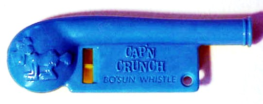
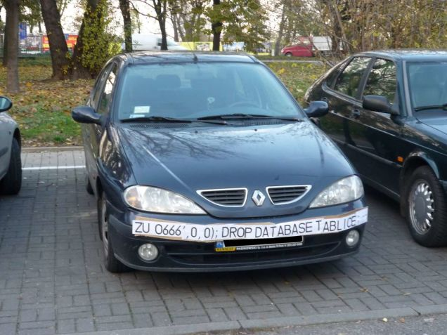

In the mid 1950s, there was a young boy named Josef Engressia, who liked to play with the telephone. Josef was born blind, and naturally he found that the telephone, an object designed for interacting with the world through sound - not vision - made quite a plaything.
Phones in those days worked much more simply than they do today. The physical phone in your home used a single electical signal to send information to the phone company - rotary dialers would click the signal on and off in rapid succession, which would communicate the numbers of the phone number to be dialed. Hanging up the phone would entirely cut off the signal, indicating an end to your call. By the time he was 5 years old, Josef learned that he could rapidly click the hangup switch to simulate a rotation of the dialer, and placed calls by flicking the switch and counting instead of dialing.
By the time he was 7, Josef - who had perfect pitch - had learned to do something even more impressive. He found he could whistle at certain pitches to activate phone switches. By mimicking the exact tone that indicated a 'trunk line' was ready, he essentially bypassed AT&T's ability to charge him for phone calls.
Josef shared this information, along with the fact that the exact tone - 2600 hertz - could be easily and cheaply reproduced by anyone, with or without perfect pitch, using a toy whistle that was a promotional prize made by Cap'n Crunch Cereal.
Some of the people Josef shared this information with would go on to build elaborate devices that could reproduce many other tones used by the phone companies to gain illgal access to phone networks - these were the granparents of modern 'hacking.'
While modern networks are far more sophisticated than the phone system of the 1950s, hacking as an activity is possible because of the same kind of design flaws that allowed a 7-year-old to make free long distance calls.
Phone systems haven't changed much since those days. A phone takes sound and converts that sound to an electrical signal. The signal is carried along copper wire and routed to its destination, where another phone converts the signal back into sound. Any information about where the signal should be routed, whether the connection is still active, and so on - well, that information must be carried on the same copper wire.
Theoretically, the phone hardware should know the difference between sound information and routing information, but the electronic components that were used in those days were not very sophisticated, and so the tones that were set as standard bearers of routing information were perfectly audible to phone users. Your typical user thinks nothing of the pleasant humming of a dial tone or the musical notes that echo from the handset while they dial a number. These are just background noises - the point of the phone is to talk to someone, and that is what the user is waiting to do.
But to a blind child, who had nobody to call, who was just playing with the telephone as an object, the phone itself seemed to be singing to him, and it was perfectly natural to sing back.
SQL Injection is a much more modern hacking technique, but it has many parallels. A user is interfacing with a website, which in turn interacts with a SQL database. At some point, the user is prompted for information, which the site intends to use to return the desired results from the database.
Your typical user in both cases is interested in this device as a means to an end. You pick up a phone to talk. You access a website for information. But a person who is not motivated by the same set of factors may choose this as a time to play with what's in front of them.
Just as the phone system essentially has two completely different languages - speech and tones - the website also is dealing in multiple languages - human information and computer information. If the user decides to "sing" to your website instead of merely talking to it, there's a very good chance you haven't considered all of the things your website might hear. He may get ahold of the database itself, instead of the information that's in it - and that can be very dangerous for your database.
I think this analogy is important, because Josef Engressia wasn't an evil genius. He wasn't a malicious criminal or a traitorous double agent. He was a child, playing with something that wasn't necessarily meant to be a toy - but it also wasn't designed NOT to be a toy. The thought of it as a musical toy for a blind child simply hadn't crossed anyone's mind.
This is what we as designers of interconnected systems are up against. Someone somewhere is going to look at this thing that we designed, and because they possess a very special worldview, which is quite unlike ours, they will see what we have built, and they will see it quite differently than we do. Their reaction, the way they might choose to play, is all but impossible for us to predict.
This is not to make light of the kind of hacker who IS a malicious criminal, mind you. There are plenty of those out there, too - but I think it's fair to say that their behavior is much more predictable. They will go after data that is valuable, they will try hardest to gain access where it will benefit them the most. They are rational actors, from whom we must guard things like passwords, financial data, corporate strategies, and company secrets. But I think we must also try - at least now and then - to look at the world we live in, and the many worlds that we create, with a sense of childlike wonder. We won't be the only ones that do.
